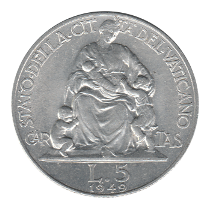
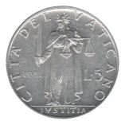
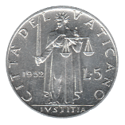
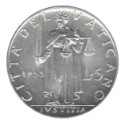
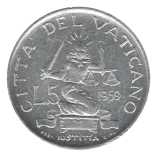
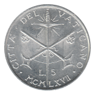
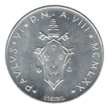
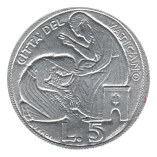

Five Lire
Pius XI / Pius XII (1929-1941)
Pius XII (1947-1950)
 1949
Pius XII (1951-1958)
 1951
 1952
 1953
John XXIII (1959-1962)
 1959
Paul VI (1963-1965)
Paul VI (Changing Designs) (1966-1969)
 1967
Paul VI (1970-1977)
 1970
 1975 Holy Year
Paul VI (1978)
Back to Vatican City
Back to Home